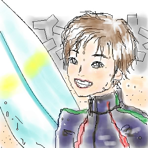

September.2002
翠蘭さんの所のお絵描き掲示板に描かせて頂きました。
久々の熊ちゃんですごく緊張しました。
熊ちゃんの顔は、線一本がちょっとずれても熊ちゃんじゃなくなる気がします。
これもあんまり納得いってません…。むずかしいっ！
一応ボディボードで次の波を待つ熊ちゃんなのですが、私にはボディボードの
知識が本当にないので、ボードも適当です。
ウェットスーツ着せちゃいましたが、これって着るんですかね？(笑)
ボードの色は、熊ちゃんのイメージカラー（とおっしゃった方の多かった）水色にしてみました。